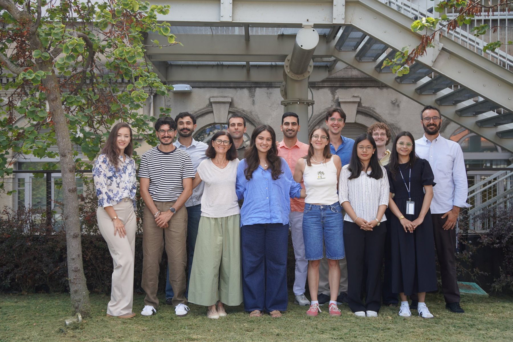

We study the biological and chemical processes that let treatment systems recover clean water, nutrients, and energy from streams currently treated as waste.
Real reactors and analytical methods, not just simulations.
Thesis work that's built to become a conference paper or journal article.
Projects grounded in problems real treatment facilities are trying to solve.
Our projects sit at the intersection of microbiology, electrochemistry, and process engineering, all aimed at closing the loop between what a treatment plant takes in and what it can give back.
Engineering microbial communities that remove organic load and nutrients more reliably, using less energy than conventional activated sludge.
Capturing nitrogen and phosphorus from wastewater streams and converting them into usable fertilizer products instead of discharge byproducts.
Applying electrochemical reactors to recover metals, generate value-added chemicals, and cut the energy footprint of treatment.
Translating lab-scale results into models and pilot designs that utilities and industry partners can actually implement.
Every project in the group follows the same underlying logic, applied to a different waste type or process.
Understand the composition, variability, and hidden potential of a wastewater or byproduct stream.
Design biological or electrochemical systems that selectively remove, transform, or recover target compounds.
Deliver a usable output — clean water, fertilizer, chemicals, or metals — at a scale that makes sense for real facilities.
A mix of graduate researchers, undergraduates, and collaborators working across the group's project areas.

The WAVE group, DICA — Politecnico di Milano.edit caption
Placeholder profiles — swap in real names, roles, and photos for each group member.edit me
A running list of peer-reviewed papers and conference proceedings from the group.
We're always open to hearing from prospective students and collaborators working on water, waste, and resource recovery.
DICA — Dipartimento di Ingegneria Civile e Ambientale
Politecnico di Milano
Milan, Italy